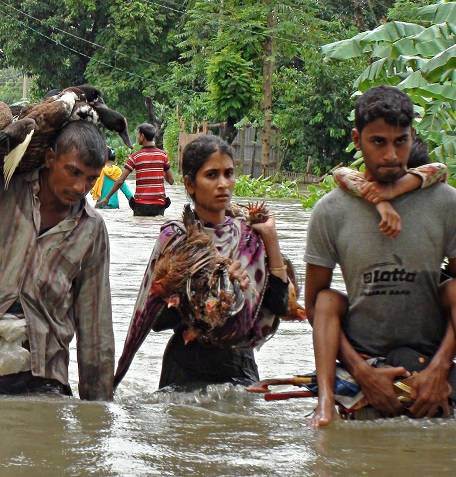
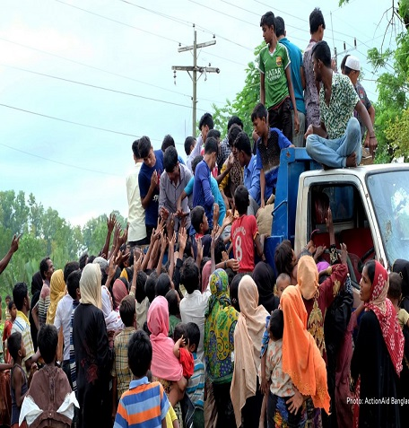
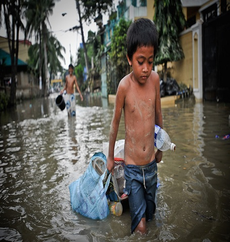

Let's Help, Who are in need of our small contribution to make their life a little comfortable
Sylhet is facing flood, worst of it's kind. Everything was under water for several days. People are in need of help.
Donate Today
Flood affected people need our help. They have lost almost everything in this natural disaster. Our donation can support them.
100tk
200tk
500tk
1000tk
500tk
Donation Plan
Depending on the situation we have taken sevaral donation plan.
Food For a Family
You can sponsor food for a family by your donation.
Shelter For a Family
Take initiative to manage shelter for a family.
Education For a Children
You can take responsibility to educate a children.
Their Life Depents on Your Donation
In the last few weeks, millions of people in the Sylhet and Sunamganj districts have experienced heavy rains and flash floods, leaving them homeless and without possessions. With homes crushed, objects floating away and people missing, the country is at high alert.


They Need Us to Survive
With hills, hillocks, tea gardens, waterfalls, wetlands, swamps, marshes called haors and beels in this part of the world, Sylhet has a unique and contrasting topography. Although haors experience flash floods of varying intensity almost every year, the highlands there hardly come under such severely rushing inundation as the city proper and 13 upazilas have done this year. Although people's sufferings know no bounds because residents in the affected areas had to leave their homes for temporary shelters, the extent of human sufferings failed to receive the attention it deserved. In fact, unrelenting price hikes of essentials have relegated the issue, like other important developments, to the back burner. But there are low-income people in Sylhet and Sunamganj too and the floods have wrought havoc with crops, many people's sources of income such as livestock, fish farms etc.
Take immediate steps to save flood victims
Incessant rain and onrush of water from upstream have been ravaging the whole Sylhet region. Thousands of people are stranded in flood water. While the whole Sylhet region is affected by the deadly floods, the situation in Sunamganj is especially devastating. Thousands of people have become marooned and they do not have any dry place to take shelter. Many people are starving. Lightning strikes have exacerbated the situation. Sunamganj’s communication with other parts of the country has become cut off as the Sylhet-Sunamganj highway had gone under water. The mobile network in the district has collapsed. Almost all upazilas of Sunamganj have been submerged. Five upazilas have been cut off from the district town. Members of the Bangladesh Army are working to evacuate the people of three upazilas.

Get Donation Update
Get the update status of your donation from our social media pages. If you are satisfied by our activity, donate more.